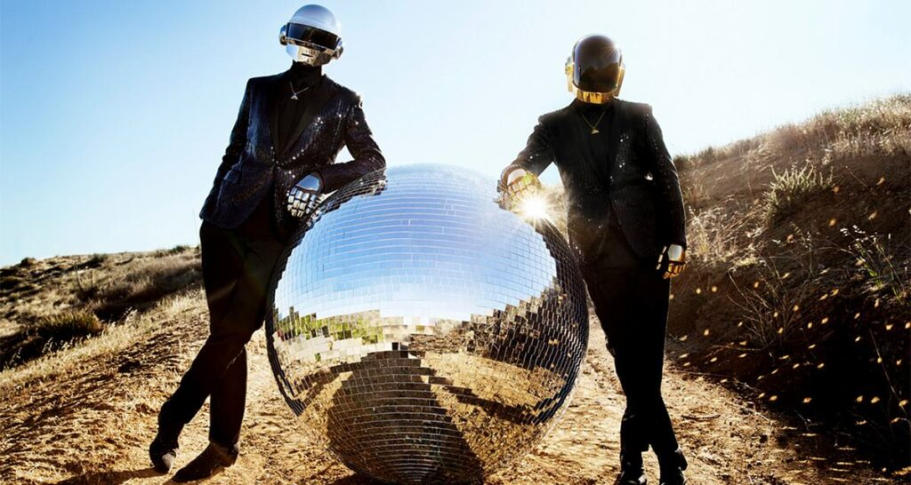

Навігація сайтом
У світі є речі незмінні й поза часом. Неважливо, який зараз рік: 2021 чи 1993, Daft Punk — це легенда приблизно на рівні the Beatles, Nirvana або Depeche Mode.
Усі легенди різні, але їх поєднує, як мінімум, одна спільна риса: такі музичні зірки горять довго, вони не падають і не гаснуть.
Тим більше будемо відвертими, кожна друга людина на планеті знає цю групу і може наспівати їх відомий трек з Pharrell Williams “Get Lucky”.